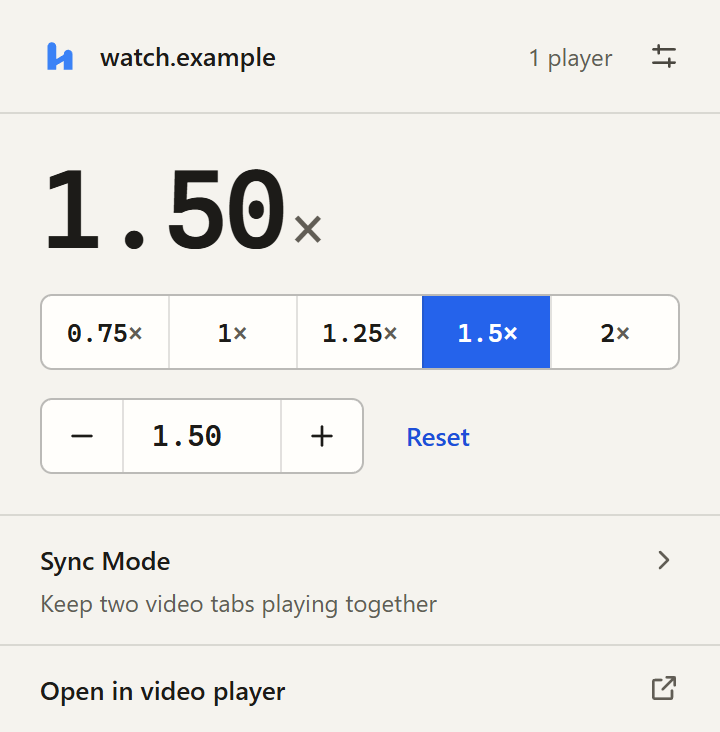
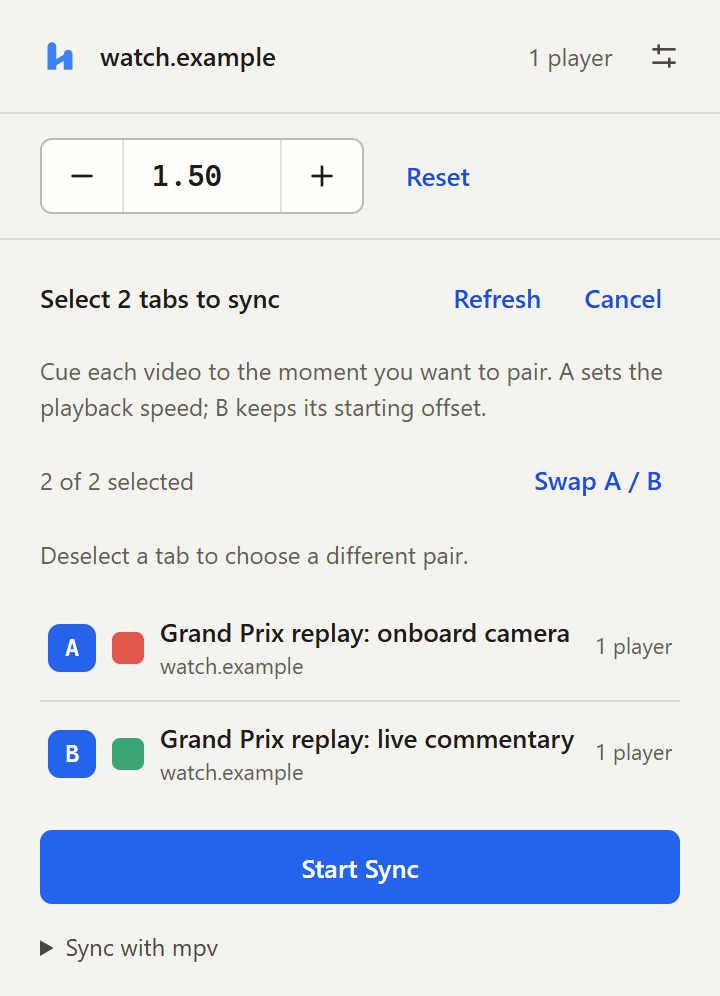
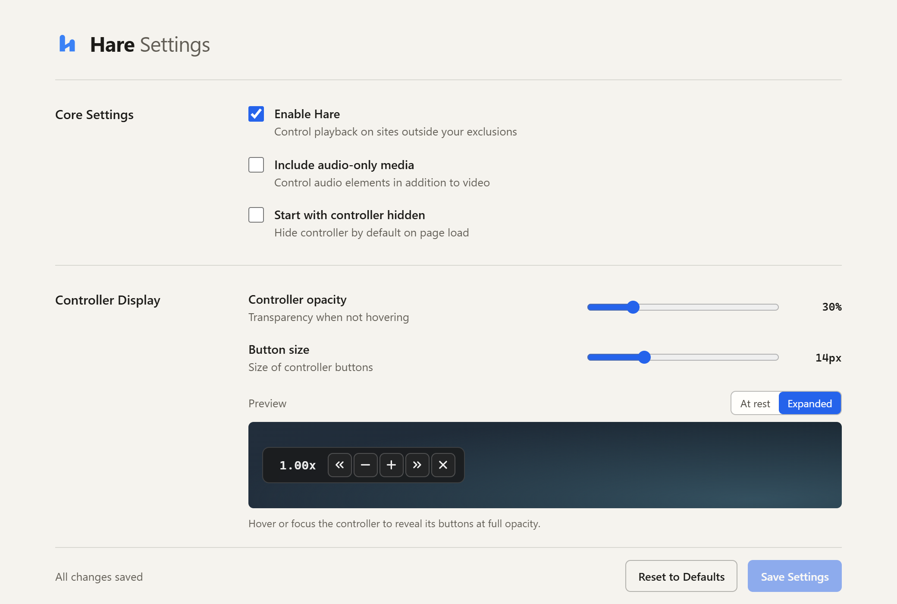

any video,
at your speed
Speed control, keyboard shortcuts and two-tab sync for every player on the web.

Speed, one key away
From 0.07× to 16× on any HTML5 video or audio. Use the keyboard, the popup, or the small controller that sits on the player.
- S Slower by 0.1×
- D Faster by 0.1×
- R Reset to 1×
- Z Rewind 10 seconds
- X Advance 10 seconds
- V Show or hide the controller
Two tabs, one timeline
Sync Mode pairs media in two tabs, or a tab and mpv. They play, pause, seek and change speed together, and keep the offset you set. It suits a second camera angle, a commentary track, or a reaction video next to its source.

Tuned to you
Rebind every shortcut and its amount, restyle the controller with a live preview, and exclude the sites where you would rather Hare stayed out of the way. Settings follow you across devices through your browser's sync.

the rest of the kit
-
Open in your video player
One button hands the video you are watching to VLC, mpv or whichever player opens
.m3ufiles, starting where you left off. -
Sync with mpv
Drop hare.lua into mpv's scripts folder and any video you open in mpv can be paired with a tab.
-
At home on the big sites
Tuned handling for YouTube, Netflix, Prime Video, Disney+, Twitch and 10 more, and it works on everything else too.
Get Hare
Chrome and Edge
Hare isn't in the Chrome Web Store, so install it unpacked. Repeat these steps for a new version.
- Download
hare-<version>-chrome.zipfrom the latest release and extract it. - Open
chrome://extensionsoredge://extensionsand turn on Developer mode. - Click Load unpacked and select the extracted folder.